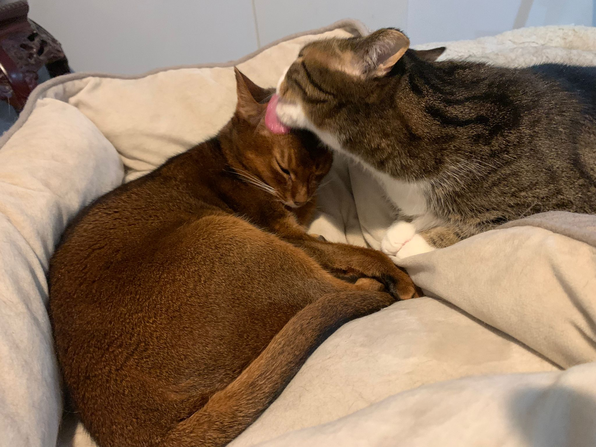

Sophie
Kiwi’s cross beak doesn’t get him down - he uses it to hook a toy
basketball. He scores every time!
Empress Palpatine

PhinnyCat & Zoozoo
Petal
Petal, Carlyroo & ZooZoo
Casper joining the snuggle
Boone, who lives at 1061 Craven Rd. is a loveable goofball who
hails originally from rural Tennessee, but is settling into big
city life in Toronto. Boone's hobbies include cuddles and sleeping
on the bed.
Biscuit, who lives at 1061 Craven Rd. and feels that napping in
the sun is the best use of his time.